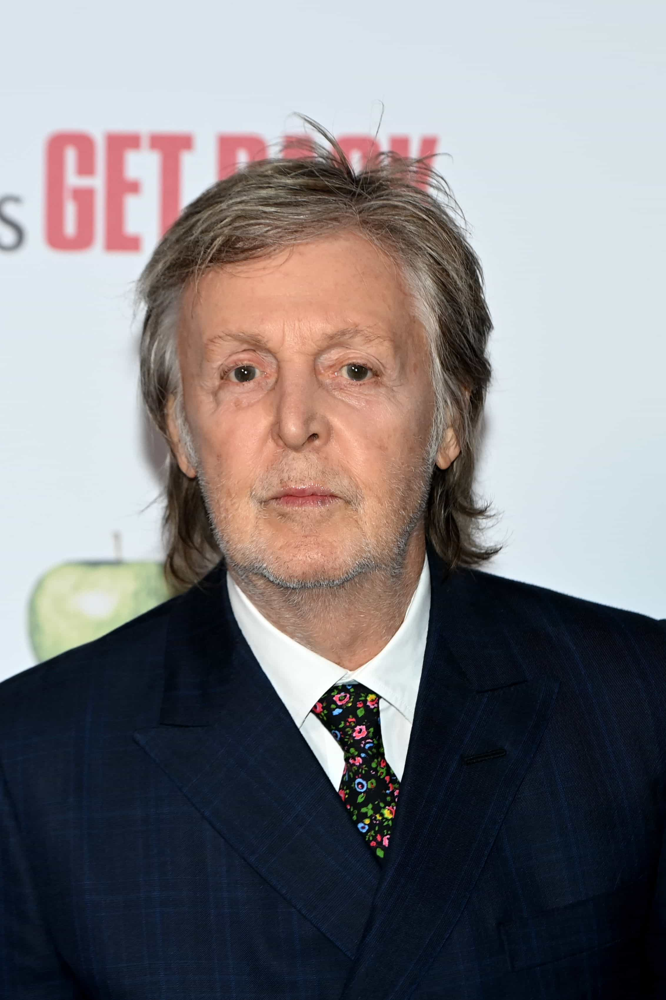

Paul McCartney
Vocals, bass
Alongside John Lennon, Paul McCartney formed the other half of the most successful songwriting duo ever and marks the lasting face of the Beatles. Known for his signature sweet voice and melodic range, Paul met a young Lennon in 1957 and was a founding member of the group.
In spite of strife between McCartney and Lennon as the Beatles’ sound developed, Paul grew into his role as the true face of the Beatles, spearheading Sgt. Pepper’s Lonely Hearts Club Band and his simple, catchy tunes often contrasted the more avant-garde approach taken by Lennon.
Upon the Beatles’ split in 1970, McCartney went on to have a successful career in music, first with the band Wings formed by him and his wife. He released McCartney as a solo album in 1970, and McCartney II in 1980, both to critical acclaim.
One of the two Beatles still living, McCartney is a widely beloved figure in pop culture, revered for his contributions to music and general likability. He has released music as recently as this year and will live on as one of the true legends of modern music.
Source: https://en.wikipedia.org/wiki/Paul_McCartney